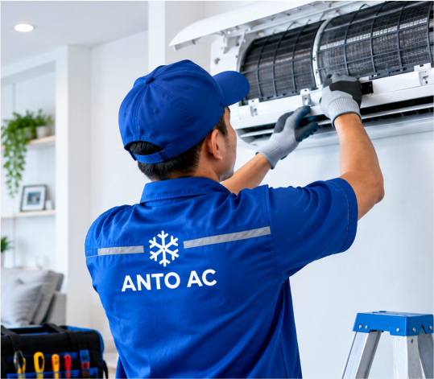
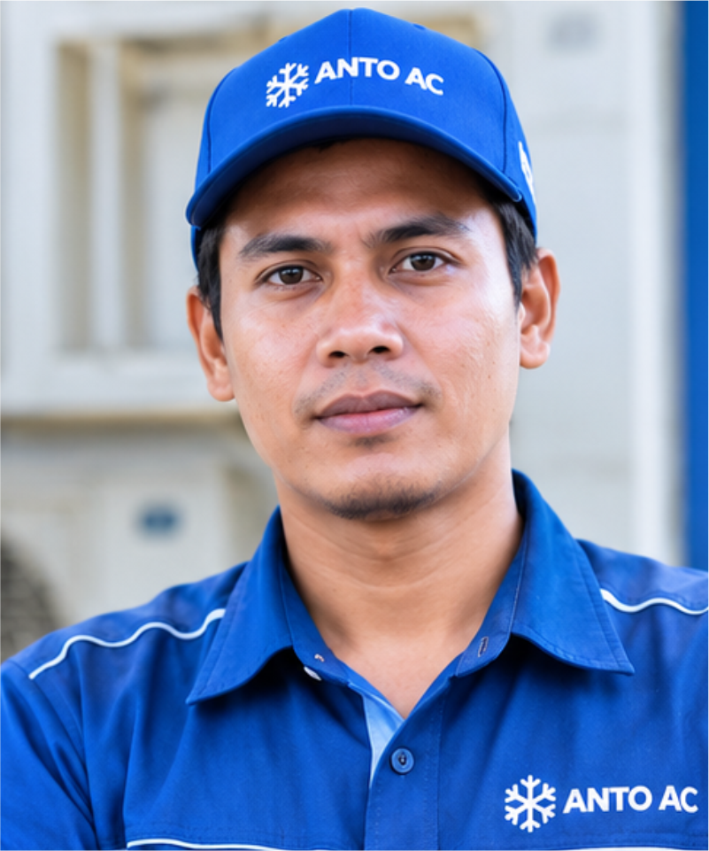
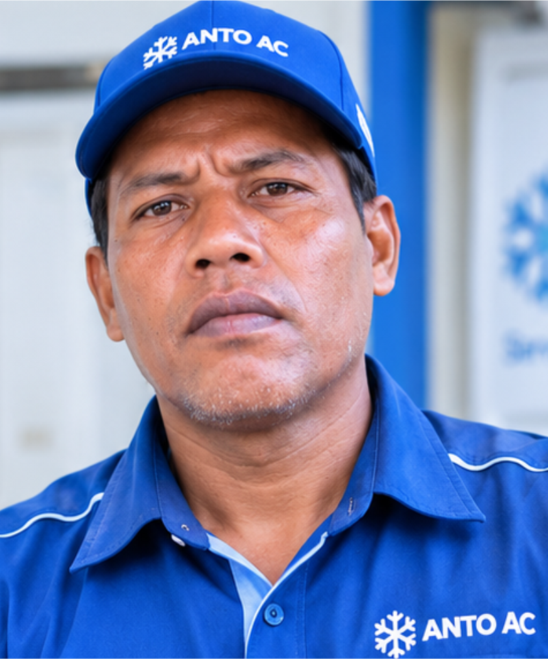

Perawatan Rutin/ Cuci AC
Membersihkan indoor dan outdoor agar AC kembali dingin, bersih, dan maintenance.
Pesan sekarang →Perawatan, Perbaikan, Cuci AC, isi freon, hingga instalasi. Teknisi berpengalaman siap datang ke lokasi Anda dengan layanan cepat dan rapi.

Kami memastikan setiap pekerjaan AC dilakukan dengan standar terbaik. Proses yang teliti, hasil yang rapi, dan kenyamanan pelanggan adalah prioritas kami.
Membersihkan indoor dan outdoor agar AC kembali dingin, bersih, dan maintenance.
Pesan sekarang →Service Ringan seperti pengecekan tekanan, deteksi kebocoran, dan pengisian refrigerant sesuai kebutuhan, hingga service berat.
Pesan sekarang →Instalasi baru dan bongkar-pasang AC lama, sesuai request pelanggan
Pesan sekarang →Melayani Jual Beli AC Baru dan AC bekas layak Pakai dengan harga terjangkau dan bersaing.
Pesan sekarang →Setiap pekerjaan dilakukan dengan teliti menggunakan metode yang tepat agar hasil optimal dan tahan lama.
Dapatkan solusi AC dari teknisi berpengalaman.
Tentukan layanan yang sesuai kebutuhan AC Anda.
Perbaikan dan perawatan cepat serta profesional.
Terima hasil pekerjaan dan tips perawatan AC.
AC Dingin & Nyaman, hanya sekali klik.
Solusi AC terpercaya dengan pengerjaan rapi dan bertanggung jawab.


Teknisi datang tepat waktu, komunikatif, dan hasil service/cuci AC sangat rapi. Setelah diservice, AC kembali dingin.
— Teguh, Owner Kayu LawasanRespon admin cepat dan teknisinya ramah. Penjelasan mengenai kondisi AC juga sangat membantu saya.
— Dewok, Owner Creator Tees ProPelayanannya memuaskan. Pengerjaan bersih dan AC yang sebelumnya bau sekarang kembali nyaman. Thanks ANTO-AC
— Rengga, Ibu Rumah Tangga Service AC
Service AC Cleaning
Cleaning Instalasi
Instalasi Maintenance
MaintenanceBerikut beberapa pertanyaan yang paling sering ditanyakan oleh pelanggan.
Sebaiknya AC dirawat/service setiap 3–6 bulan, tergantung intensitas pemakaian, kondisi ruangan, dan lingkungan.
Beberapa tanda umum misalnya seperti AC kurang dingin, aliran udara lemah, air menetes/bocor, suara aneh/bising, bau tidak sedap, atau listrik terasa lebih boros.
Perbaikan ringan dapat selesai dalam 1 jam. Kerusakan komponen besar dapat membutuhkan waktu lebih lama setelah diagnosa.
Keputusan bergantung pada usia unit, kondisi komponen, frekuensi kerusakan, dan biaya perbaikan. Teknisi kami dapat membantu mengevaluasi serta memberikan rekomendasi.
Harga dapat disesuaikan berdasarkan kondisi unit dan lokasi pekerjaan.
| No | Layanan | Harga Mulai |
|---|---|---|
| 1 | Cuci AC 0.5 – 1 PK | Rp80.000 |
| 2 | Cuci AC 1.5 – 2 PK | Rp85.000 |
| 3 | Cuci AC Inverter 0.5 – 2 PK | Rp100.000 |
| 4 | Tambah Freon 0.5 – 1 PK | Rp285.000 |
| 5 | Tambah Freon 1.5 – 2 PK | Rp325.000 |
| 6 | Isi Freon 0.5 – 1 PK | Rp395.000 |
| 7 | Isi Freon 1.5 – 2 PK | Rp425.000 |
| 8 | Vakum AC | Rp285.000 |
| 9 | Pasang AC 0.5 – 1 PK | Rp375.000 |
| 10 | Bongkar Pasang AC | Rp495.000 |
| 11 | Flushing Evaporator | Rp295.000 |
| 12 | Pengecekan AC | Rp75.000 |